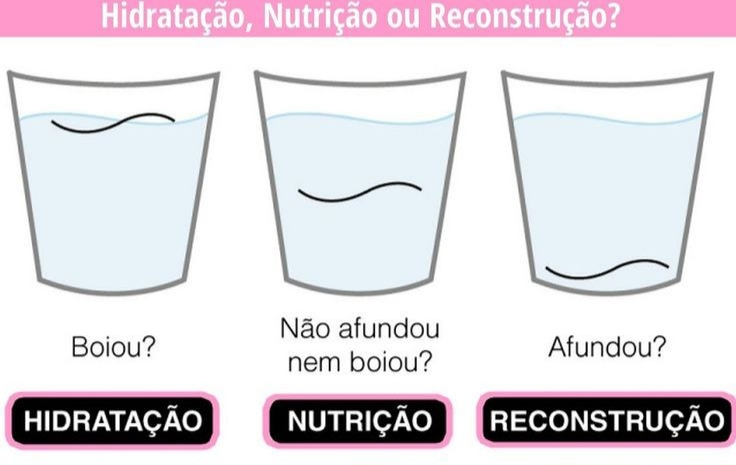

Cronograma capilar
Todas nós queremos um cabelo sedoso e saudável, confira abaixo algumas coisas sobre cronograma capilar!

Teste de porosidade e resistência.
Sugestão básica baseado em cada tipo de curvatura.
Principais dicas
- Veja mais sobre o teste de porosidade.
Cronogramas
- Acesse os cronogramas.
Mais informações
Acesse o site para mais informações sobre cronograma natural!
PARA BAIXAR CRONOGRAMA EM PDF
Baixe aqui seu PDF.
Obrigada!
Volte sempre!